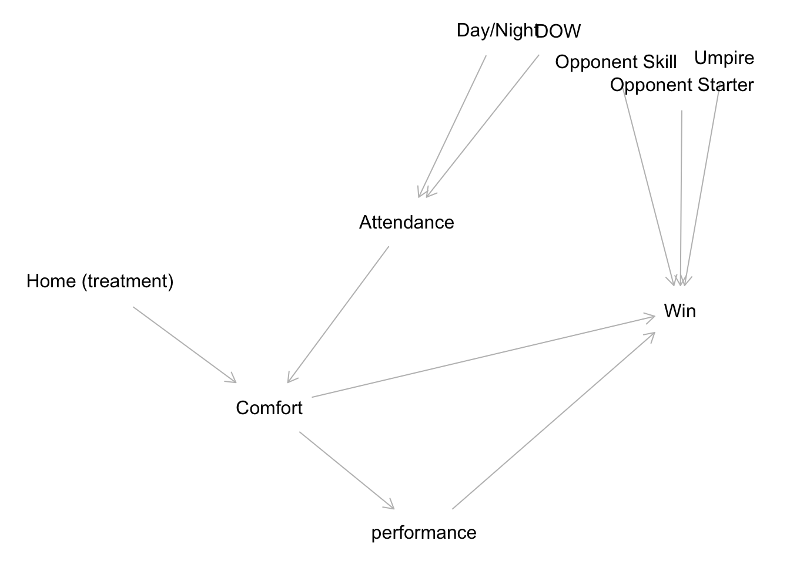
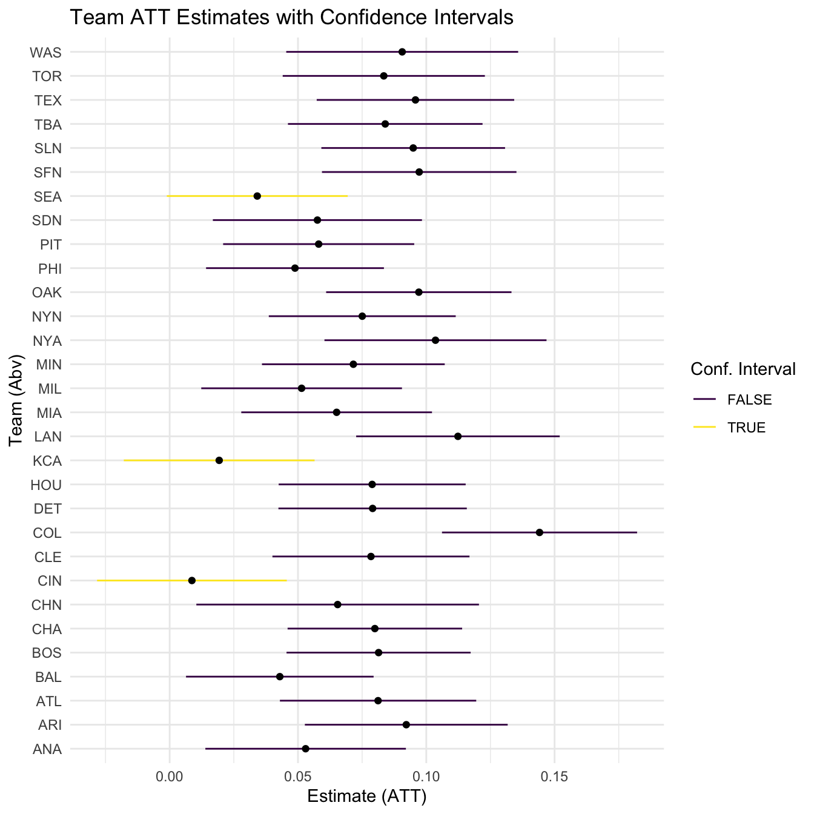
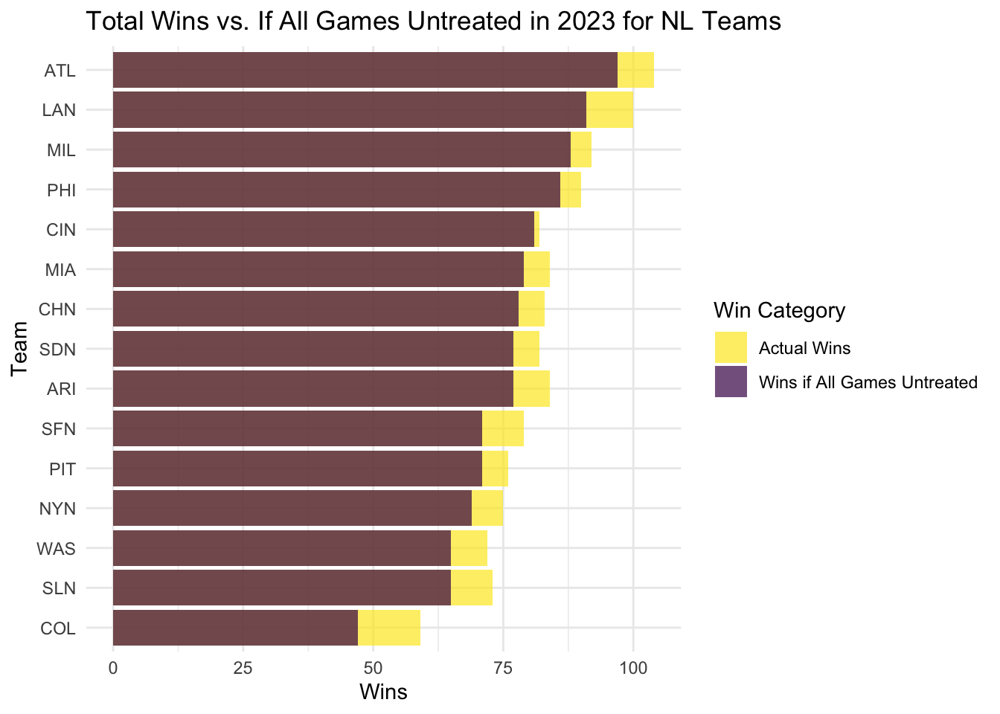
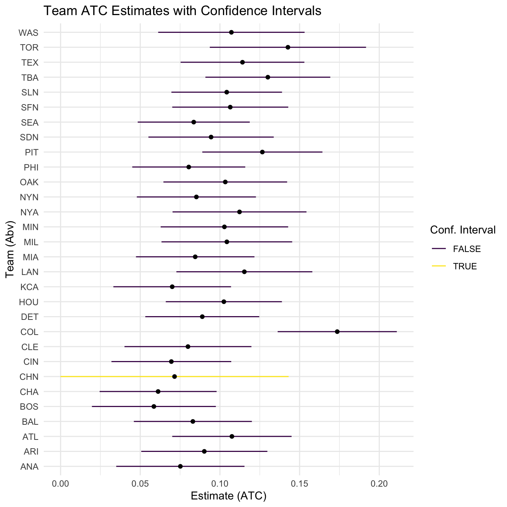
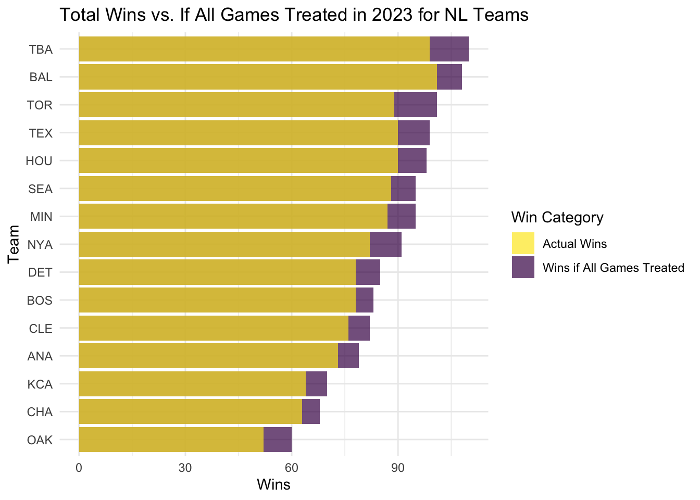

## Date Year Month Day Game_Type Dow Away_Team Away_League Away_Game_Number
## 1 20230330 2023 3 30 0 Thu ARI NL 1
## 2 20230331 2023 3 31 0 Fri ARI NL 2
## 3 20230401 2023 4 1 0 Sat ARI NL 3
## 4 20230402 2023 4 2 0 Sun ARI NL 4
## 5 20230403 2023 4 3 0 Mon COL NL 5
## 6 20230404 2023 4 4 0 Tue COL NL 6
## Home_Team Home_League Home_Game_Number Away_Score Home_Score Home_Away_Winner
## 1 LAN NL 1 2 8 Home
## 2 LAN NL 2 2 1 Away
## 3 LAN NL 3 1 10 Home
## 4 LAN NL 4 2 1 Away
## 5 LAN NL 5 4 13 Home
## 6 LAN NL 6 2 5 Home
## Team_Winner Game_Outs Day_Night Completion_Info Forfeit_Info Protest_Info
## 1 LAN 51 N NA
## 2 ARI 54 N NA
## 3 LAN 51 N NA
## 4 ARI 54 D NA
## 5 LAN 51 N NA
## 6 LAN 51 N NA
## ParkID Attendance Game_Length Away_Line Home_Line Away_AB Away_H Away_2B
## 1 LOS03 52075 155 110000000 00203201x 28 4 1
## 2 LOS03 45389 161 20 100 34 7 2
## 3 LOS03 48886 134 10000000 50003011x 32 5 2
## 4 LOS03 46549 152 10001 100000000 33 9 2
## 5 LOS03 49792 167 40000 00207022x 32 6 2
## 6 LOS03 52290 145 2 20110001x 32 7 4
## Away_3B Away_HR Away_RBI Away_SAC Away_SF Away_HBP Away_BB Away_IBB Away_K
## 1 0 0 2 0 1 1 0 0 8
## 2 0 1 2 0 0 0 1 0 5
## 3 0 1 1 0 0 0 0 0 10
## 4 0 0 2 0 0 1 0 0 6
## 5 0 0 3 0 0 0 3 0 12
## 6 0 0 2 0 1 1 2 0 7
## Away_SB Away_CS Away_GIDP Away_CI Away_LOB Away_Pitchers Away_ER Away_WP
## 1 0 0 2 0 1 5 8 0
## 2 0 0 0 0 6 4 1 1
## 3 0 0 1 0 4 4 10 0
## 4 4 0 2 0 5 5 1 0
## 5 0 0 1 0 4 3 13 0
## 6 0 0 2 0 7 4 5 0
## Away_BLK Away_PO Away_A Away_E Away_PB Away_DP Away_TP Home_AB Home_H Home_2B
## 1 0 24 7 1 0 0 0 34 12 2
## 2 0 27 8 0 0 0 0 31 5 1
## 3 0 24 7 0 0 0 0 30 8 2
## 4 0 27 9 0 0 0 0 31 4 0
## 5 0 24 6 1 0 1 0 36 13 2
## 6 0 24 10 0 0 2 0 28 7 2
## Home_3B Home_HR Home_RBI Home_SAC Home_SF Home_HBP Home_BB Home_IBB Home_K
## 1 0 1 8 0 1 0 5 0 12
## 2 0 1 1 0 0 0 9 0 9
## 3 0 4 10 0 1 1 5 0 7
## 4 0 1 1 0 0 1 4 0 11
## 5 2 3 13 0 1 1 5 0 11
## 6 0 3 5 0 0 0 5 0 9
## Home_SB Home_CS Home_GIDP Home_CI Home_LOB Home_Pitchers Home_ER Home_WP
## 1 0 0 0 0 8 4 2 0
## 2 0 1 0 0 12 4 2 0
## 3 0 1 0 0 3 2 1 0
## 4 1 0 0 0 8 4 2 0
## 5 0 0 1 0 6 5 4 0
## 6 0 1 2 0 4 5 2 0
## Home_BLK Home_PO Home_A Home_E Home_PB Home_DP Home_TP HP_Ump_ID
## 1 0 27 8 1 0 2 0 hudsm901
## 2 0 27 12 0 0 0 0 wendh902
## 3 0 27 8 1 0 1 0 tumpj901
## 4 0 27 9 1 0 2 0 blakr901
## 5 0 27 4 0 0 1 0 carlm901
## 6 0 27 11 1 0 2 0 bakej902
## HP_Ump_Name X1B_Ump_ID X1B_Ump_Name X2B_Ump_ID
## 1 Marvin Hudson wendh902 Hunter Wendelstedt tumpj901
## 2 Hunter Wendelstedt tumpj901 John Tumpane blakr901
## 3 John Tumpane blakr901 Ryan Blakney hudsm901
## 4 Ryan Blakney hudsm901 Marvin Hudson wendh902
## 5 Mark Carlson bakej902 Jordan Baker gibsh902
## 6 Jordan Baker gibsh902 Tripp Gibson millb903
## X2B_Ump_Name X3B_Ump_ID X3B_Ump_Name LF_Ump_ID LF_Ump_Name
## 1 John Tumpane blakr901 Ryan Blakney (none)
## 2 Ryan Blakney hudsm901 Marvin Hudson (none)
## 3 Marvin Hudson wendh902 Hunter Wendelstedt (none)
## 4 Hunter Wendelstedt tumpj901 John Tumpane (none)
## 5 Tripp Gibson millb903 Brennan Miller (none)
## 6 Brennan Miller carlm901 Mark Carlson (none)
## RF_Ump_ID RF_Ump_Name Away_Manage_ID Away_Manage_Name Home_Manage_ID
## 1 (none) lovut001 Tony Lovullo robed001
## 2 (none) lovut001 Tony Lovullo robed001
## 3 (none) lovut001 Tony Lovullo robed001
## 4 (none) lovut001 Tony Lovullo robed001
## 5 (none) blacb001 Buddy Black robed001
## 6 (none) blacb001 Buddy Black robed001
## Home_Manage_Name Winning_Pitcher_ID Winning_Pitcher_Name Losing_Pitcher_ID
## 1 Dave Roberts uriaj001 Julio Urias gallz001
## 2 Dave Roberts jamed003 Drey Jameson vesia001
## 3 Dave Roberts kersc001 Clayton Kershaw bumgm001
## 4 Dave Roberts chafa001 Andrew Chafin gratb002
## 5 Dave Roberts almoy001 Yency Almonte feltr001
## 6 Dave Roberts uriaj001 Julio Urias marqg001
## Losing_Pitcher_Name Save Save_Pitcher_ID Save_Pitcher_Name GWRBI_ID
## 1 Zac Gallen No Save (none) smitw003
## 2 Alex Vesia Save chafa001 Andrew Chafin lewik001
## 3 Madison Bumgarner Save jacka003 Andre Jackson taylc001
## 4 Brusdar Graterol Save mcgos001 Scott McGough mccaj003
## 5 Ryan Feltner No Save (none) outmj002
## 6 German Marquez Save phile001 Evan Phillips smitw003
## GWRBI_Name Away_SP_ID Away_SP_Name Home_SP_ID Home_SP_Name
## 1 Will Smith gallz001 Zac Gallen uriaj001 Julio Urias
## 2 Kyle Lewis kellm002 Merrill Kelly may-d003 Dustin May
## 3 Chris Taylor bumgm001 Madison Bumgarner kersc001 Clayton Kershaw
## 4 Jake McCarthy daviz001 Zach Davies syndn001 Noah Syndergaard
## 5 James Outman feltr001 Ryan Feltner grovm001 Michael Grove
## 6 Will Smith marqg001 German Marquez uriaj001 Julio Urias
## Away_Win_Percentage Away_Playoffs Away_WS Away_Win_P_Cat Team
## 1 0.519 1 0 Good Los Angeles Dodgers
## 2 0.519 1 0 Good Los Angeles Dodgers
## 3 0.519 1 0 Good Los Angeles Dodgers
## 4 0.519 1 0 Good Los Angeles Dodgers
## 5 0.364 0 0 Terrible Los Angeles Dodgers
## 6 0.364 0 0 Terrible Los Angeles Dodgers
## Home_Win_Percentage Home_Playoffs Home_WS Home_Win_P_Cat Away_SP_WAR
## 1 0.617 1 0 Great 4.3
## 2 0.617 1 0 Great 3.9
## 3 0.617 1 0 Great -0.7
## 4 0.617 1 0 Great -1.4
## 5 0.617 1 0 Great 0.1
## 6 0.617 1 0 Great 0.2
## WAR_Group.x Home_SP_WAR WAR_Group.y Home LAN_win Opp_Win_Percentage
## 1 Great 0.7 Good 1 1 0.519
## 2 Great 1.5 Great 1 0 0.519
## 3 Terrible 3.8 Great 1 1 0.519
## 4 Terrible -1.1 Terrible 1 0 0.519
## 5 Decent -0.8 Terrible 1 1 0.364
## 6 Decent 0.7 Good 1 1 0.364
## Opp_Playoffs Opp_WS Opp_Win_P_Cat
## 1 1 0 Good
## 2 1 0 Good
## 3 1 0 Good
## 4 1 0 Good
## 5 0 0 Terrible
## 6 0 0 TerribleThe Reality of Home Field Advantage
Quantifying the Effect of Playing at Home in Major League Baseball
Introduction
Home field advantage is a widely debated topic in sports, especially baseball. While many fans, experts, and players believe that the home team benefits significantly, others question the extent of its impact. The concept has been discussed for years, with people on both sides weighing in on how much of a difference playing at home actually makes.
Several factors are believed to boost a home team’s chances of winning, including fan attendance, stadium atmosphere, weather conditions, official bias, and reduced travel-related fatigue. In baseball, a unique component of home field advantage is the ability to bat last, which gives the home team the final opportunity to respond in close games. Some believe this is an advantage while others believe that being able to bat first outweighs batting last. Other details, such as choosing which dugout to occupy, may seem minor but can contribute to players’ comfort and familiarity with their surroundings.
The effect of these factors varies depending on the team, stadium, and location, with some teams benefiting more than others. For instance, fan support can fuel the home team’s energy and morale, creating an intimidating atmosphere for visiting teams. Additionally, familiarity with the field’s unique dimensions and quirks, such as outfield wall height or irregular field boundaries, can provide a strategic edge to the home team.
Some argue that these factors, while impactful, may have only a marginal effect on game outcomes. Others believe that, especially in high-stakes games, even a small advantage can tip the balance. Recent data analyses attempt to measure home field advantage objectively, looking at win percentages, score differentials, and player performance, among other metrics, to understand just how much these factors influence game results. Based on this information, we aim to establish a causal relationship showing that home field advantage affects certain teams more than others and evaluate the possible reasons for differences between teams.
Literature Review
Home field advantage is a topic of ongoing debate in sports research, with numerous studies examining its impact across various sports and competitive contexts. While there is a broad consensus that playing at home provides certain benefits, the degree and mechanisms of this advantage remain subjects of inquiry. Researchers have explored factors like fan presence, reduced travel demands, and even environmental familiarity, but findings often vary by sport, league, setting, and even team.
Scholars and experts boast different views on the subject, as some believe that home field advantage strongly affects win percentage while others disagree. The Home Field Advantage in Athletics: A Meta-Analysis examines the home field advantage (HFA) in sports, focusing on factors that influence its magnitude (Jamieson, 2010). Jamieson notes that the overall winning percentage for home teams, in sports that were a part of the analysis, was about 60%, with soccer being the highest and baseball being the lowest. Jamieson notices that this could potentially be due to baseball having a significantly longer season, thus also noting that sports with shorter seasons have higher HFA. Jamieson also notes that crowd size, density, and behavior amplify HFA, especially in sports with vocal, supportive fans, such as baseball. Fans will boo their team when they aren’t succeeding, but will also cheer against the opposing team, which can often impact the opposing team’s performance. Another point Jamieson makes is that athletes generally report higher motivation and confidence at home, with crowd support possibly aiding performance in procedural skills. An example of this is Trea Turner, a player for the Philadelphia Phillies. In 2023, he was performing the worst in his career. The Philadelphia fans organized a standing ovation for him at one of the Phillies home games. After this ovation, his season turned around and he helped lead the Phillies to the playoffs. Examples like this one and Jamieson’s research show how having home field advantage can impact a team’s winning percentage.
“Home Field (Dis)Advantage and the ‘Last-Ups’ Effect” by Stephen Shmanske and Franklin Lowenthal investigates the impact of the “last-ups” rule in baseball, where the home team bats last, on home field advantage. Many fans, experts, and players believe that a team has an advantage in being able to bat last because it knows how many runs need to be scored. Shmanske and Lowenthal argue against this claim by using close games and extra-inning games to examine strategic advantages. They suggest, that while the home team might benefit from knowing the visitor’s score before batting, the visiting team can adapt its defensive strategies in the final inning to counter this. Lowenthal and Shmanske use regression analysis to study the 2002-2004 seasons. Their study suggests that home teams are slightly more likely to win by one run, however, there is no significant effect of “last-ups” on overall HFA. Overall, the study challenges the belief that batting last provides a substantial advantage, finding instead that defensive adaptations may negate any offensive benefits in critical situations, contributing to baseball’s lower HFA relative to other sports.
“Major League Baseball during the COVID-19 pandemic: does a lack of spectators affect home advantage?” by Yung-Chin Chiu and Chen-Kang Chang examines the effect of fan attendance in the MLB. They use COVID-19 as an example of when fans weren’t allowed to attend games. They compare the 2020 season to the 2015-2019 seasons. Their results showed no statistically significant change in HFA during the spectator-free 2020 season, suggesting that crowd presence may not be a major factor in MLB’s HFA. However, the study notes potential confounding factors in 2020, including altered schedules, new rules, and pandemic-related psychological stress on players, which may have affected results. Possible explanations for this result could include that MLB’s relatively stable HFA may stem from factors such as team familiarity with facilities and travel-related fatigue, which are less influenced by spectators. Overall, the study supports the idea that MLB’s HFA is less crowd-dependent compared to other sports.
“The Home Field Advantage: Implications for the Pricing of Tickets to Professional Team Sporting Events” by David W. Boyd and Laura A. Boyd discusses the economic implications of home field advantage on ticket pricing for professional sports events. The study explores how home field advantage can influence the demand for tickets, noting that fans are more likely to attend games where the home team has a higher chance of winning. This demand can be influenced by the strength of the home team and the perceived advantage provided by playing at home. Their study finds that ticket demand and pricing are indeed affected by home field advantage. Attendance tends to be positively correlated with the home team’s past performance and other factors that enhance home advantage. This also brings up the point that ticket prices can positively or negatively influence fan attendance. If ticket prices are too high, fans may choose not to attend the games, resulting in a lower HFA for the team. The study provides insights into how home field advantage can be leveraged in ticket pricing strategies, but also how ticket prices could affect fan attendance and in turn affect HFA.
Through these experts’ research and our data, we can look into different perspectives surrounding home field advantage and how it could causally affect the winning percentages of certain teams over other teams and the potential reasons that arise.
Data
We collected game-level data from Retrosheet, a database that tracks and stores Major League Baseball data at the game level. We gathered data on each regular season baseball game from 1995 to 2023. Each game’s data contains variables such as the date, team information, stadium information, attendance, score, team stats, umpire information, and pitcher information. This is important because the data gives us an abundance of information to match or weigh on if we choose to go down those paths. The dimensions of our dataset are 68185 observations of 175 variables.
We also gathered several other pieces of information such as pitcher WAR (Wins Above Replacement), a stat that calculates a player’s worth against the average player, and team information from every year, such as if they made the playoffs or won the World Series that year. This information was found on Baseball Reference.
We performed several filters from here to produce the final data set we will use for our analysis. First, we only included games were included in the regular season. We made some adjustments by team as well. For example, we are analyzing the years 1995 and after, however, the Tampa Bay Rays became a team in 1998 so we only could gather data starting that year. Another adjustment we made is to treat the Florida Marlins and the Miami Marlins as the same team because they are the same franchise but were renamed in 2012. In the data, the two names are coded differently and are working around it by naming both the Miami Marlins. We also made some other changes to help make it easier to add confounding variables. We added binary categories for opposing team statistics that can help us control for certain variables as well as adding player-specific statistics to help with the analysis.
All three data sets were joined together to produce a final data set. We then made a new data set for each team so we could complete an analysis of each team. We chose to exclude the years 2020 and 2021 from our analysis. Since we are concerned with home field advantage, we anticipate a portion of home field advantage to stem from fans attending games and making their presence felt. Because of the pandemic, there was extremely limited attendance in these two years, which is why they are excluded from our data sets. We have a total of 30 data sets; one for each MLB team, and will analyze them individually and compare them to each other. Shown below is an example data set of one of our teams, Los Angeles Dodgers (LAN). It is also important to note in our data that cities with more than one team have the same name except for the last letter. For example, the New York Yankees and the New York Mets have the abbreviations NYA and NYN respectively. The “A” stands for “American League” and the “N” stands for “National League.”
Causal Graph

The diagram represents a causal model for examining the factors influencing a team’s likelihood of winning a game. Playing at home is treated as the primary “treatment” and directly affects the team’s comfort, which in turn influences performance and the outcome (win). Home games also impact attendance, which is connected to comfort and winning. Attendance itself is shaped by external factors, including whether the game is day or night, the day of the week, the opponent’s skill level, and the specific opponent. Other variables, such as the umpire and the starting pitcher, directly influence the game’s outcome. Together, these factors highlight the complex pathways through which home advantage, external conditions, and game dynamics contribute to the likelihood of winning.
Methods
To analyze our data, we chose to implement partial exact matching. When looking at our DAG plot, we noticed that we had no real confounding variables, because our treatment is essentially random. After all, being home or away in a game is randomized at the beginning of the season. We chose to match on precision variables, which are variables that can directly affect whether a team wins or loses. We chose to match the variables Opp_Win_P_Cat, Opp_Playoffs, Opp_WS, Dow, Day_Night, Away_SP_WAR, Home_SP_WAR, and chose to exact match on Opp_Win_P_Cat, Opp_Playoffs, Opp_WS, Dow, and Day_Night.
Opp_Win_P_Cat: Opponent Winning Percentage Category (<60 wins, 61-80 wins, 82-99 wins, >100 wins)Opp_Playoffs: Did the opposing team make the playoffs that year?Opp_WS: Did the opposing team win the World Series that year?Dow: Day of the week.Day_Night: Day or Night game.Away_SP_WAR: Away team starting pitcher WAR (Wins Above Replacement).Home_SP_WAR: Home team starting pitcher WAR (Wins Above Replacement).
After deciding what to match on, we created three separate for loops to complete the matching process for all 30 MLB teams and stored the results into a final data set for the ATT, ATC, and ATE. To streamline the process for the sensitivity analysis, we created three loops to complete a sensitivity analysis for each data set which included calculating the number of wins and losses for both home and away games for each team. These steps allowed us to easily analyze the results effectively.
In both the ATC and ATT analyses, every team matched well with the expected trends, demonstrating consistent patterns of home-field advantage. The only exception was the Cubs in the ATC analysis, where the results did not align as strongly with the overall trend, suggesting potential unique factors affecting their performance.
Analysis and Results
ATT
ATT stands for Average effect of Treatment on the Treated. In the context of our question and the data, this translates to the average effect on a specific team if it played every home game as an away game. Let’s use the Dodgers as an example. The Dodgers play 81 home games and 81 away games every year. The ATT takes all 81 home games and analyzes them as if they were away games, thus we are analyzing if the Dodgers played all 162 games away. It is important to note that for the ATT, low estimates mean there is minimal home field advantage and a high estimate means there is more home field advantage. Below is a plot of every team’s estimates and confidence intervals, noting if it crossed 0 as well.

First, lets analyze a large estimate. Below are the results from our ATT analysis for the top six teams arranged by estimate. The estimates can be interpreted using a percentage. For example, if our estimate is .1, we can say for our years of analysis, if every home game had been played away, the team we are analyzing would have lost 10% more games. We could also say that that team’s winning percentage would’ve decreased by .1. It is important to note that most team’s balance statistics looked good and made for an accurate analysis, with most teams having less than 40 unmatched cases.
## Team estimate conf.low conf.high CI_Crosses_Zero
## 1 COL 0.14413742 0.10612599 0.1821489 FALSE
## 2 LAN 0.11234163 0.07268108 0.1520022 FALSE
## 3 NYA 0.10358686 0.06032137 0.1468523 FALSE
## 4 SFN 0.09724336 0.05935007 0.1351366 FALSE
## 5 OAK 0.09709161 0.06098021 0.1332030 FALSE
## 6 TEX 0.09578422 0.05730521 0.1342632 FALSEColorado has the largest estimate at about .14, which means that for all games in our analysis, if Colorado played every home game as an away game, its winning percentage would decrease by .14, or it would win 14% fewer games. This contextually makes sense because Colorado plays at a very high altitude, which increases the flight of the ball. Colorado can use this to its advantage, and sign more hitters that hit the ball in the air to increase its home runs. Colorado is also used to the altitude because it trains at high altitudes year round and is more used to it than its opponents. The Los Angeles Dodgers and the New York Yankees also have estimates over .1, which indicates that both teams also have a significant home field advantage over other teams.
## Team estimate conf.low conf.high CI_Crosses_Zero
## 1 CIN 0.008676082 -0.028287501 0.04563967 TRUE
## 2 KCA 0.019302765 -0.017865504 0.05647103 TRUE
## 3 SEA 0.034134108 -0.001106765 0.06937498 TRUE
## 4 BAL 0.042924061 0.006379298 0.07946882 FALSE
## 5 PHI 0.048838781 0.014187049 0.08349051 FALSE
## 6 MIL 0.051416965 0.012312140 0.09052179 FALSELooking at a low estimate, we can see that Baltimore has an estimate of about .043, which means that for all games in our analysis, if Baltimore played every home game as an away game, its winning percentage would decrease by about .043, or it would win about 4% fewer games. This means that there is no real change between a home game and an away game for Baltimore, thus it doesn’t have a large home field advantage. Cincinnati and Kansas City also have low estimates, however, all confidence intervals cross 0, which means its estimate isn’t significant.
Let’s apply these estimates to the 2023 season. Because we included a wide range of years for our sample, we can generalize the results for one year in our data set. Below is a plot of the teams in the National League and the total wins for each team as well as their total wins if we applied the ATT estimate. To calculate the ATT estimated wins, or total wins if every game is untreated, we found the winning percentage for each team’s home games and subtracted the estimate from that number. We then multiplied the new percentage by 81 and rounded to the nearest win to get the new number of home wins. Finally, we then added that number to the away wins to get the total wins if every game was untreated. Below is the plot showing what the National League standings would have looked like if every game was untreated, and includes the original wins as well.

Our results show that home field advantage has some effect on the standings in 2023. Arizona, which was the 5th best team in the National League and made the playoffs, would’ve dropped to the 9th best team and missed the playoffs, while another team would’ve made the playoffs in Miami’s place. Cincinnati also moved up a couple of spots and made the playoffs in this scenario. After seeing these results, we can see that while home field advantage affect a single game outcome, it can also affect whether or not a team makes the playoffs.
ATC
ATC stands for Average effect of Treatment on the Control. Like the ATT, in the context of our question and the data, this translates to the average effect on a specific team if it played every away game as a home game. Let’s use the Twins as an example. The Twins play 81 home games and 81 away games every year. The ATC takes all 81 away games and analyzes them as if they were home games, thus we are analyzing if the Twins played all 162 games at home. We can interpret the estimates for the ATC as follows. For low estimates, it mean there is minimal home field advantage and a high estimate means there is more home field advantage. Below is a plot of every team’s estimates and confidence intervals, noting if it crossed 0 as well. Looking at the ATC balance statistics for all teams, most had fewer than 40 unmatched, however, teams with confidence intervals that cross 0 have significantly higher unmatched cases.

We’ll analyze a larger estimate first. Below are the results from our ATC analysis for the top six teams arranged by estimate. The estimates can be interpreted using a percentage. For example, if our estimate is .15, we can say for our years of analysis, if every away game had been played at home, the team we are analyzing would have won 15% more games. We could also say that that team’s winning percentage would’ve increased by .15. It is important to note that most team’s balance statistics looked good and made for an accurate analysis, with most teams having less than 40 unmatched cases.
## Team estimate conf.low conf.high CI_Crosses_Zero
## 1 COL 0.1736180 0.13622936 0.2110067 FALSE
## 2 TOR 0.1426706 0.09364079 0.1917003 FALSE
## 3 TBA 0.1300662 0.09087702 0.1692554 FALSE
## 4 PIT 0.1266223 0.08892352 0.1643212 FALSE
## 5 LAN 0.1153280 0.07266863 0.1579874 FALSE
## 6 TEX 0.1141506 0.07531117 0.1529901 FALSEConsistent with our ATT results, Colorado has the largest estimate at about .17, which means that for all games in our analysis, if Colorado played every away game as a home game, its winning percentage would increase by about .17, or it would win 17% more games. As mentioned previously, this contextually makes sense because Colorado plays at a very high altitude, which increases the flight of the ball making it a very hitter friendly ballpark. Colorado can use this to its advantage by signing different types of hitters or by spending more money on good hitters than pitchers. Colorado is used to its ballpark conditions, and it could have an impact on its winning percentage at home. Toronto and Tampa Bay also have estimates over .1, which indicates that both teams also have significant home field advantage over other teams. This could be due to the fact that both teams have domes on their stadium, changing different playing factors.
## Team estimate conf.low conf.high CI_Crosses_Zero
## 1 BOS 0.05854639 1.965546e-02 0.09743731 FALSE
## 2 CHA 0.06119702 2.449134e-02 0.09790269 FALSE
## 3 CIN 0.06950683 3.191910e-02 0.10709456 FALSE
## 4 KCA 0.07004567 3.312372e-02 0.10696762 FALSE
## 5 CHN 0.07151089 -8.236024e-05 0.14310415 TRUE
## 6 ANA 0.07516771 3.492424e-02 0.11541119 FALSEThe Boston Red Sox have the lowest positive estimate at about .59. This means for all games in our analysis, if Boston played every away game as a home game, its winning percentage would increase by about .59, or it would win about 6% more games. This means that there is a slight change between a home game and an away game for Boston, thus it doesn’t have the largest home field advantage. Cincinnati and the Chicago White Sox also have low estimates, suggesting that both teams also have less significant home field advantage than others.
The Cubs ATC estimate is also an interesting case and is the only negative estimate in our analysis. Its estimate is about .72. We can interpret it as if the Cubs played every away game at home, meaning all 162 games were played at home, the Cubs would win about 7% more games. However, the Cubs confidence interval crosses 0, which makes their estimates insignificant, which means it doesn’t have significant home field advantage.
Like the ATT, we’re going to apply these estimates to the 2023 season, the last season in our data. Below is a plot of the teams in the National League and the total wins for each team as well as their total wins if we applied the ATC estimate. Similar to the ATT, we calculated the ATC estimated wins, or total wins if every game is treated, by finding the winning percentage for each team’s away games and adding the estimate from that number. We then multiplied the new percentage by 81 and rounded to the nearest win to get the new number of away wins. Finally, we then added that number to the home wins to get the total wins if every game was treated. Below is the plot showing what the National League standings would have looked like if every game was treated, and includes the original wins as well.

Our results indicate that for the ATC, home field advantage has somewhat of an effect on the 2023 standings. In this scenario, teams that were on the bubble of making the playoffs, such as Toronto, would have convincingly made the playoffs in this situation. Tampa Bay also overtook the Orioles for the top seed in the playoffs which would give the Orioles home field advantage throughout the playoffs. These results have a larger difference in standings when analyzing the ATT, and show that playing every game at home can have more of an effect on the 2023 standings. These results also show how playing every away game as a home game can change the standings, and award a team with home field advantage throughout the duration of the playoffs.
Sensitivity Analysis
To complete our sensitivity analysis, we ran a for loop on every team to calculate how many home wins, away wins, home losses, and away losses. An E-value is a measure used in sensitivity analysis to quantify the strength of an unmeasured confounder that would need to exist in order to fully explain away an observed causal effect, indicating how robust the findings are to potential hidden biases. Below are plots of teams with the six largest and smallest estimated e-values.
## Team home_win home_loss away_win away_loss est.Evalue lower.Evalue
## 1 COL 1188 995 855 1327 2.123706 1.929971
## 2 PIT 1100 1093 888 1310 1.789209 1.598647
## 3 MIA 1108 1062 924 1267 1.715862 1.529060
## 4 TBA 1025 923 848 1098 1.708021 1.515917
## 5 TEX 1199 983 1004 1177 1.674494 1.501066
## 6 SFN 1214 972 1025 1158 1.647703 1.476071
## Team home_win home_loss away_win away_loss est.Evalue lower.Evalue
## 1 BOS 1255 928 1134 1047 1.447533 1.270906
## 2 CIN 1107 1088 998 1201 1.462828 1.261149
## 3 CLE 1220 957 1096 1087 1.476360 1.298192
## 4 SEA 1160 1035 1031 1148 1.478293 1.288571
## 5 ATL 1292 892 1152 1029 1.486572 1.320512
## 6 KCA 1008 1169 896 1289 1.510985 1.297534Colorado has the highest e-value at around 2.1 which means that the degree to which our analysis could be affected by a confounding variable is lower for them. This makes sense as well because the park is known to provide an advantage to hitters due to elevation and ball flight. Boston on the other hand has the lowest e-value at 1.45 which may suggest that our estimation and analysis for them is more sensitive to confounding variables. For Boston specifically, their park layout with the green monster may confound in addition to other variables. The mean e-value for every team in the data set is 1.6 which could be better and may suggest that there are uncounted variables that influence the relationship between winning and playing at home.
Limitations and Next Steps
One limitation of this study is the lack of weather data, which could have provided valuable insight into how environmental factors impact home field advantage. Additionally, insufficient umpire matching may have introduced some bias into the analysis, as umpire decisions can influence game outcomes.
Future research could benefit from separating analyses by year to account for changes in team performance or external factors over time. Another potential direction is creating a Home Field Advantage (HFA) metric that quantifies the precise increase in win percentage for each team. Expanding the analysis to include other major sports leagues could also provide a broader understanding of home field advantage across different competitive contexts.
Conclusions
The future of baseball and the fan experience remains uncertain, as teams continue to innovate and transform how fans engage with the game. For instance, the Oakland A’s are incorporating a shopping mall within their new stadium, a change that could influence home field advantage in unforeseen ways.
Our analysis of home field advantage in Major League Baseball (MLB) reveals a clear advantage for many teams, with about half of the league experiencing a significant increase in win percentage when playing at home. Teams like the Colorado Rockies, Toronto Blue Jays, and New York Yankees, which feature historically distinct ballparks, show a higher win percentage, likely due to unique stadium characteristics such as elevation, ballpark design, and environmental conditions. These teams benefit more from home field advantage, demonstrating a notable shift in performance when playing at home compared to away games.
However, certain teams, such as the Cincinnati Reds and Chicago Cubs, show no significant home field advantage. This lack of impact may be attributed to challenges in matching teams effectively for the analysis or other confounding factors. The Cubs’ analysis, for example, presented difficulties with unmatched cases, which may have influenced the results. Sensitivity analysis suggests that the findings are vulnerable to unmeasured confounders, though the average E-value across teams is not excessively high, indicating that the results are generally robust. Still, external factors such as weather, umpire crew, and stadium layout remain influential.
Our findings further emphasize that home field advantage is not a universal benefit across MLB teams. Environmental factors like Colorado’s unique altitude and ballpark conditions play a significant role, while other teams derive more benefit from fan support, familiar surroundings, and local team dynamics. While home field advantage does contribute to team success, its impact varies widely across the league. These results underscore that the degree of home field advantage is shaped by a variety of factors, providing valuable insights into how such dynamics influence a team’s performance. This study lays the foundation for further research into the intricate role that home field advantage plays in shaping competitive outcomes in sports.
Works Cited
Bleed Cubbie Blue. (2024, March 7). Oakland Athletics new stadium renderings. Bleed Cubbie Blue. https://www.bleedcubbieblue.com/2024/3/7/24093196/oakland-athletics-new-stadium-renderings
Boyd, David W., and Laura A. Boyd. “The home field advantage: Implications for the pricing of tickets to professional team sporting events.” Journal of Economics and Finance, vol. 22, no. 2–3, June 1998, pp. 169–179, https://doi.org/10.1007/bf02771486.
Chiu, Yung-Chin, and Chen-Kang Chang. “Major League Baseball during the COVID-19 pandemic: Does a lack of spectators affect home advantage?” Humanities and Social Sciences Communications, vol. 9, no. 1, 18 May 2022, https://doi.org/10.1057/s41599-022-01193-6.
Jamieson, Jeremy P. “The home field advantage in Athletics: A meta‐analysis.” Journal of Applied Social Psychology, vol. 40, no. 7, July 2010, pp. 1819–1848, https://doi.org/10.1111/j.1559-1816.2010.00641.x.
Max and Dee. “How to Get to the Rockies Game Without a Car.” PIRG Colorado, https://pirg.org/colorado/foundation/articles/how-to-get-to-the-rockies-game-without-a-car/. Accessed 9 Dec. 2024.
“Retrosheet Game Logs.” Retrosheet, www.retrosheet.org/gamelogs/index.html. Accessed 8 Nov. 2024. Shmanske, Stephen, and Franklin Lowenthal. “Home field (dis)advantage and the ‘last-ups’ effect.” NINE: A Journal of Baseball History and Culture, vol. 18, no. 1, Sept. 2009, pp. 130–146, https://doi.org/10.1353/nin.0.0060.
Sports, Open Source. “Baseball Databank.” Kaggle, 17 Nov. 2019, www.kaggle.com/datasets/open-source-sports/baseball-databank/data?select=Teams.csv.
Code Appendix
All code and data to reproduce these visuals and analysis can be found in the Analysis.qmd, data.qmd, and SensAnalysis.qmd files linked in our GitHub Repo (https://github.com/Jposner33/Causal_Inference_Final_Macalester).